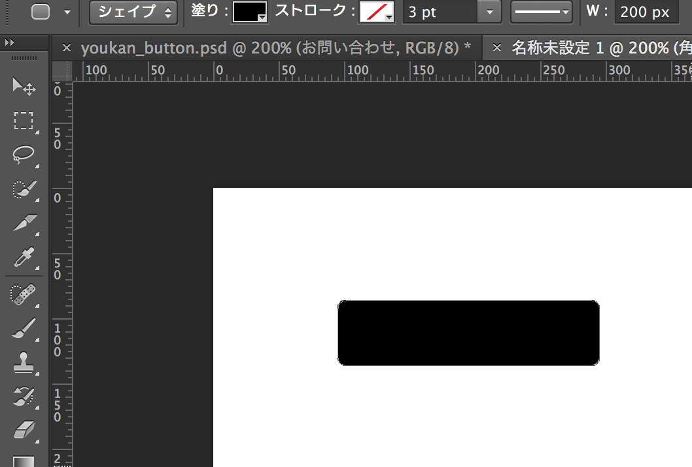
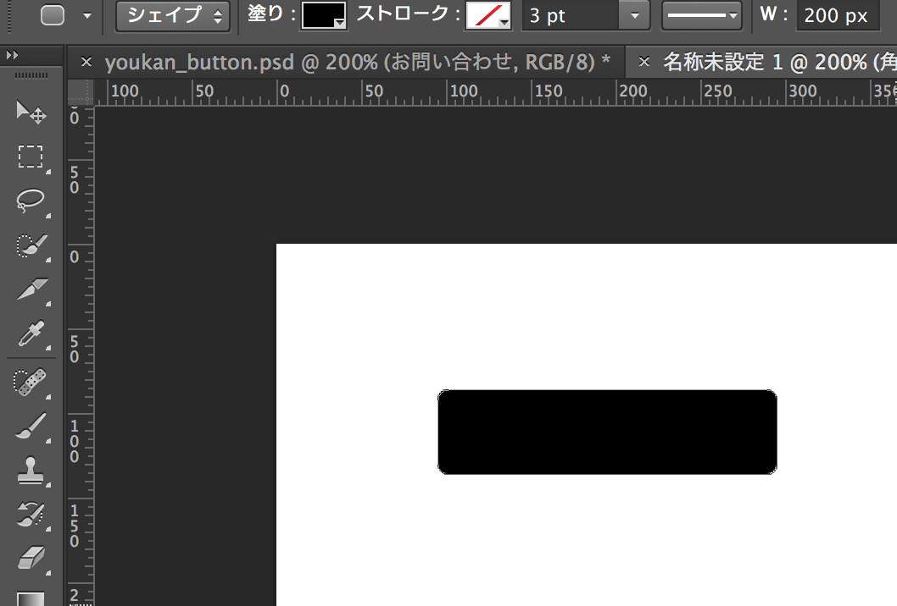

Photoshopを使った画像加工と画面効果
今時の見やすいWebページの作成には画像の利用が不可欠である．ここではPhotoshopを使ってWebページ内で使う画像の作成，配置，効果的に見せる方法について解説する．
画像素材の種類
HTMLテンプレートからサイトを構築するでも紹介した様に，昨今Webページを作成するためのライセンスフリーで素材はインターネット上の素材集サイト等から数多く入手することができる．一からデザインを作成するのに自信が無い場合は，こうしたフリー素材を利用すると良い． コンピュータで画像を扱う際の手法としては，ビットマップ（ラスター）画像とベクトル（ベクター）画像があるが，画像を加工する元素材として適しているのはベクトル画像である． ビットマップ画像とベクトル画像の解説については副教材：コンピュータにおける情報の表現（2）の「画像と動画のデジタル化」参照．
画像素材を探す
フリーで利用できるベクトル画像素材を探すには「free vector」に加えて欲しい画像のイメージを表す単語などを入れて検索すると良い．例えば「free vector icons」で検索すると60 Free Vector Icon Packs for Design Professionalsの様なまとめサイトが見つかるので，その中から自分の要求に合った素材を探す．
注意として，素材をダウンロードする際には必ずその画像のライセンス（利用規約）を確認すること．ライセンスによっては改変を禁止していることもあるので，クリエイティブ・コモンズなどの分かりやすいライセンスを採用している素材を使うのが良い． また，Google検索では詳細オプションにより二次利用が可能なライセンスのものを検索する機能もあるので，そういった機能を使うと便利である

リンク画像などのロールオーバー処理
画像をハイパーリンクのボタンとして利用した場合，ただAタグでリンクを指定しただけではその画像がクリック可能であるか分かりにくいことがある．そういった場合は，マウスを画像にポイントした際に「これはクリックできる」といった意図を表すために，少しだけ違う色使いの画像に切り替えると分かりやすい． こういった処理をロールオーバーと呼ぶ．
例：ロールオーバーなしの画像
例：ロールオーバーありの画像
ボタン画像の作り方
ロールオーバー画像を作るには，まずはボタン画像を作成する必要がある．ボタン画像の作成方法については，Photoshop ボタンの作り方 - 初心者向け: PSYCHEDELEDGEなど，「Photoshop ボタン」等で検索すれば良いサンプルが豊富にあるので参照すると良い． ここでは前述の例に出した問い合わせボタンを作成してみる．
まず，ベースとなる土台部分を「角丸長方形ツール」を使って作成する．背景職は「塗り」部分で変更することができる．
 

作成した角丸長方形のレイヤーを右クリックし「レイヤー効果」を開くと，細かい設定を行うことができる． 左側から変更したい要素を選択し，パラメータを変更してみると見た目が変わるので，自由に変更してみると良い．
ここでは「境界線」を1px黒色で表示し「グラデーションオーバーレイ」で描画色・背景色を調整した．
ここまで設定すると，グラデーション付きの枠が完成する．
あとは，この上に「横書き文字ツール」で文字を描画する
最後に，フリー素材サイトからアイコン画像を貼り付けて位置を調整する． こちらも「レイヤー効果」からエフェクトをかけることで立体感などを出すことができる．
ここでは，ドロップシャドウを使うことで，アイコンに影を付け，立体感を持たせた．
ドロップシャドウなし
ドロップシャドウあり
最後に，ここまででキャンバス上に作成した画像は適当に大きなサイズのキャンバスの上に書いているので，画像部分だけの切り出しを行う． 切り出しには「スライスツール」を使い，切り出したい部分を選択する．ここは微調整が必要になるため，拡大率を上げる（Command + ＋キー）などの機能を使い，正確に指定すること．
スライス範囲を指定したら，ファイルメニューから「Web用に保存」を選択する．スライスツールで分割した状態だと，各分割部分毎にファイル名などを指定することができる．ここでは03が欲しい部分なので，当該部分を選択して「保存」を行えば，当該画像を取得することができる．これでボタン画像の作成が完了する．

ロールオーバー画像の作り方
最後に，ロールオーバー用の画像を作成するには，同じファイルで再度角丸長方形のレイヤー効果を開き「カラーオーバーレイ」で「不透明度」を適当に設定する（ここでは30％）． すると，角丸のグラデーションが少し薄い色になるので，これをロールオーバー用画像として再度保存し直せば良い
カラーオーバーレイあり

カラーオーバーレイなし

参考までに，ここで利用したPSDファイル（Photoshop形式のファイル） こちらからダウンロードできる ので，色々と試してみると良い．
ロールオーバー処理の書き方
画像が用意できたら，次はロールオーバー処理を記述することで実際にロールオーバーの処理を行う．ロールオーバーを実現するには，一般的にはCSSのhover疑似クラスを用いる方法とJavaScriptを用いる方法があるが，ここではCSSを使った方法を紹介する．
今回は，Aタグに対して画像を適用する．以下はID「otoiawase-rollover」要素内のAタグに対してtoiawase_off.jpg（マウスが乗っていない状態），toiawase_on.jpg（マウスが重ねられた状態）を切り替えるサンプルである． 「:hover」とは「その要素にマウスが重ねられた状態」を指す疑似クラスで「a:hover」とすることで，Aタグ部分にマウスが重ねられたとき，という指定になる．
CSS
#otoiawase-rollover a {
display: block;
width: 202px;
height: 52px;
background: url(../images/toiawase_off.jpg);
text-decoration: none;
text-indent: -1000em;
}
#otoiawase-rollover a:hover {
background: url(../images/toiawase_on.jpg);
}
HTML
ここで，上記CSSのwidth, height属性は元画像のサイズに合わせる必要がある．また，text-indent属性の指定はAタグ内に書いた文字が画像の上に重なって表示するのを避けるための記述である．
練習問題
- 本ページのロールオーバーサンプル画像とCSS, HTMLを作成し，実際にロールオーバーが動作することを確かめよ
- CSSのtext-indent属性を設定しないとどのような見た目になるか，確認せよ
- CSSのhover疑似クラスを使い，マウスを重ねると文字色が変わるエフェクトを実現せよ
- Photoshopを使って自分のホームページ向けのバナーを作成しなさい．バナーの作成方法やサンプルはインターネット上からやり方を検索し，好きなものを探すこと
まとめ
本ページでは，Photoshopを使ってWebページで使う素材の作成方法を紹介した．また，hover疑似クラスを使い，画像のロールオーバー処理を実現した．